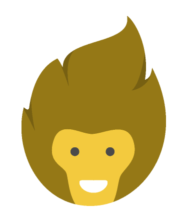

  <ion-content padding>
      
      <div class="logo">
          
        </div>
    <div>

    <ion-item >
        <ion-input id="playerInput" color="light" placeholder="Name Player" [(ngModel)]="playerName" ></ion-input>
        <ion-icon color="light" (click)="addPlayer()"name="add-circle"></ion-icon>
    </ion-item>

    <!--seconde party-->

    <div padding class="container">
        <ion-item *ngFor="let todo of playerList; let i = index">
            {{todo}}
            <div item-end>
            <ion-icon class="nameIcon" color="light" (click)="updatePLayer(i)"  name="create"></ion-icon>
            <ion-icon class="nameIcon2" color="light" (click)="deletePlayer(i)"  name="trash"></ion-icon>
            </div>
        </ion-item>
    </div>
    <div>
        <ion-button expand="block"class="button" color="light" *ngIf="playerList.length>0" (click)="confirmationButton()" [routerLink]="['/question-game']">Jouer</ion-button>
    </div>
    </div>

</ion-content>

